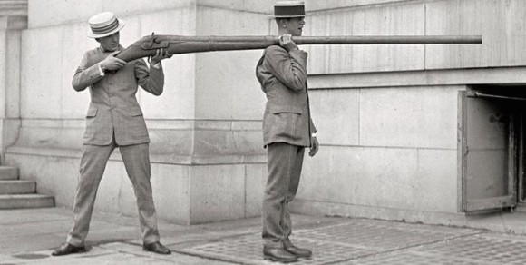

Stick Em Up! .js
Flexible, simple, sticky stuff
I created Stick Em Up so I could have a flexible and easy way to set fixed positioning on elements based on where visitors are scrolling on webpages.
What is really just does is tell you when a given elements has been reached. Once it's been reached, a class is added to the element (which gives the fixed positioning, but you can really do whatever you want). Once the element is reached again in the opposite direction, that class is removed. Please read on for more specifics.
Quick Start Guide
Getting started is easy, no options necessary other than the element you want to target. Let's take the sidebar to the left for an example.
You invoke the plugin as so:
<script>
$('.sidebar').stickEmUp();
</script>
When the sidebar reaches the top of the viewport, the class stickeEmUp (which can be overridden in the options) is added to the sidebar element. This class would contain the position:fixed and any other styling you wish to add, creating the sticky effect. When you scroll back up, once the sidebar has reached its original position, the class is removed, and the element regains it's original positioning.
Given the unique needs of an elements fixed position specific to a webpage and it's surrounding context, this plugin does not attempt to get into any of that. Instead, the stickEmUp or other named class you provide is added and removed, and you are left to create the CSS needed for your desired effect.
In the example on this page, below is the full code, with explanations given in the Options section.
<style>
.sidebar{
position: absolute;
width: 200px;
margin-top: 130px;
background: #fff;
border-radius: 4px;
padding: 20px 0;
}
.sidebar.stickEmUp{
position: fixed;
margin-top: 10px;
}
</style>
<script>
$('.sidebar').stickEmUp({
stickOffset: 10,
callback: function(info){
console.log(info);
}
});
</script>
Options
Options to come...
Download
git clone https://github.com/benrlodge/stickEmUp.git
About
Setting elements sticky at certain positions on pages has been a frequently requested feature for me. As a resourceful (lazy) developer I looked for tools that would help me do this without writing writing my own. I was hopeful when I found the waypoints plugin. Unfortunately, I found lots of funny behavior during window resizing, so I decided to just go ahead and create my own. Waypoints has many more features (I don't aim to replicate them all), this plugin serves a much simpler purpose.
This plugin will tell you when your given element is at a certain point on the page, what direction the user was scrolling when it hit that element, adds a class to the element during that time, and provides a callback throughout all of this scrolling to do what you please with this information.
This is all I've needed for my basic needs, so that's all it provides. If you have any ideas for additional features, please feel free to submit a Github issue.